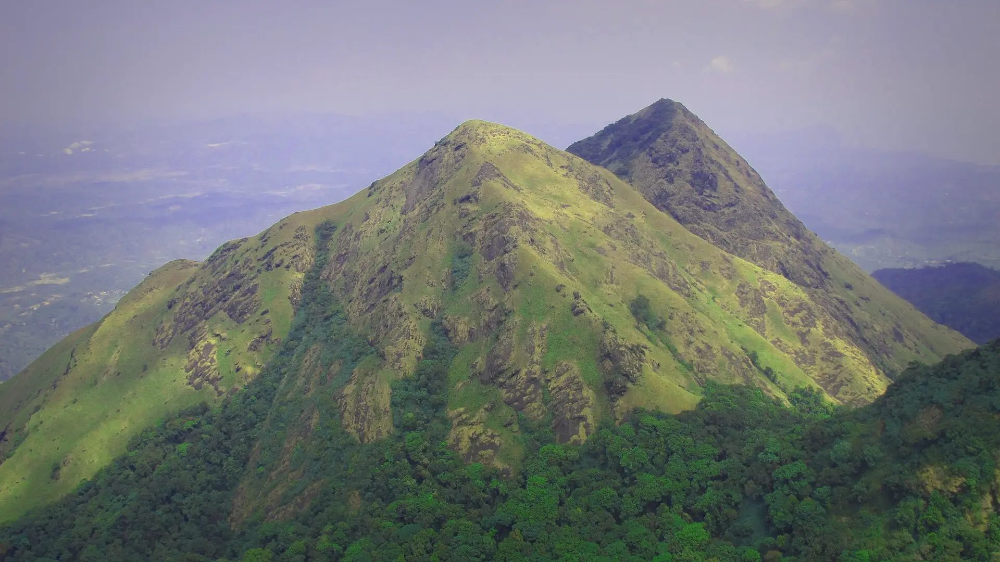

01Chembra · trail startkm 0.1
Above the tea estates
7amEntry · Until 3 pm
Vehicles stop at the forest office above Meppadi; a jeep goes on to the start. From here it is a guided walk up open grassland.

Photo: Aneesh Jose, CC BY-SA 3.0ചെമ്പ്ര · Wayanad, Western Ghats
The trek in one line, and what you can do with it.
A short, guided morning walk run by the forest department. The ridge beyond the lake is currently closed.
3 stops on the map, then the climb. Scroll the stops and the map follows.
01Chembra · trail startkm 0.1
7amEntry · Until 3 pm
Vehicles stop at the forest office above Meppadi; a jeep goes on to the start. From here it is a guided walk up open grassland.
02Chembra · Hridaya Thadakamkm 1.4
DryNever · In any summer
The trail reaches Hridaya Thadakam, the heart-shaped lake, which does not dry out in any summer.
03Chembra · trail startkm 2.7
2.7kmTrek total · On the map
Back down the same way to the start and the jeep to the forest office.
Its sources don’t name a best season yet.
Check the 3D page and your operator.
Base prices from 4 operators’ own pages, per person. GST and travel are often extra. Treqz sells nothing.
₹250–4,500
The practical things, then the questions people ask.
Take a Bangalore–Calicut bus and get off at Kalpetta: 7–8 hours, about ₹800–900. Then a bus or shared jeep to Meppadi, 11.5 km. From Meppadi mosque, an auto to the start is another 8–9 km.
Bikat Adventures DIY guideThere are hotels near the forest office if you want to stay the night before.
Bikat Adventures DIY guideBooking is offline only. The forest office numbers are +91 4936 282001 and 203428.
Kerala TourismDTPC gives trekking hours as 7 am to 12, for up to 88 people a day. Bikat says no one is let past the forest office after 2 pm.
DTPC WayanadSignal is patchy up to the start. There is none on the trek.
Bikat Adventures DIY guideThere are no stalls on the trail. Buy food and water in Meppadi. Don't drink from the pond or the heart lake.
Bikat Adventures DIY guideAbout 2.7 km of walking over 1 days on the trail.
The highest point is 2,100 m, about 350 m above the start.
Its sources grade it Easy.
₹250 to ₹4,500 per person: base prices from 4 operators' own pages. GST and travel are often extra.
Signal is patchy up to the start. There is none on the trek.